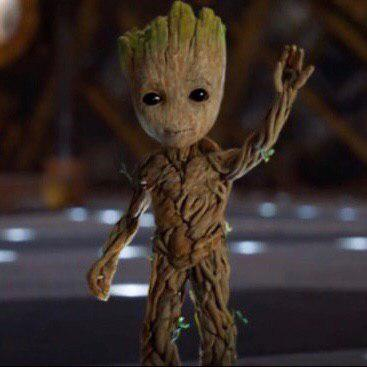

 Ґрут (англ. Groot) — вигаданий супергерой, з'являється в американських коміксах, опублікованих Marvel Comics. Створені Стеном Лі, Джеком Кірбі, Ларрі Лібером, і Діком Айерсом, персонаж вперше з'явився в Tales to Astonish #13 (Листопад, 1960). Він позаземний деревоподібних гуманоїд, що володіє високим рівнем інтелекту. Спочатку був представлений як загарбник, який прагне захопити людей для експериментів. Персонаж був пізніше представлений як героїчна, благородна істота в 2006 році, і з'явився у кросовері коміксів, у сюжетній лінії "Annihilation: Conquest". Ґрут з'явився в спін-оффі серії фільмів, Вартові Галактики, об'єднавшись в команду під однойменною назвою.
Ґрут - позаземний монстр, який спочатку прилетів на Землю і прагнув захопити людей для експериментів. Але був знищений термітами, яких використовував Леслі Еванс. Хемну зробив дублікат Ґрута, щоб боротися з Галком, але Галк знищив дублікат. Пізніше невідомим способом його захопила організація Щ.И.Т. Ґрут був учасником «Анігіляції», і швидше за все, він останній зі своєї раси як і могутній герой у всесвіті (його інопланетний родич). Він пожертвував собою, щоб у його команди був час піти, і уникнути бою. Але він вижив як гілка. Він регенерував своє тіло від гілочки до звичайного розміру, і брав участь в нападі на вавилонський Шпиль. Коли первісний план закладки вибухівки в Шпиль не вдався, Ґрут був змушений проростати всередині Шпиля до колосальних розмірів і, тим самим заповнюючи велику частину будівлі. Богомол змогла створити сік, який зробив Ґрута вогненебезпечним, і знову, жертвуючи собою, він допоміг команді зруйнувати Вавилонську Шпиль. Чергову гілочку зберіг Єнот Ракета, і після того як приєднався до команди Правоохоронці Галактики, віддав гілку Богомолу, яка змогла регенерувати Ґрута.Згодом Ґрут брав участь у всіх місіях Вартових Галактики, приймаючи на себе основну загрозу. Зіграв вирішальну роль в Війні королів, між расою Ші'ар і Кріі, де в кінці війни Чорний Грім підірвав бомбу. В результаті вибуху утворився отвір. Перше істота, яке проникло через отвір, було гігантським кальмаром, який напав на місто Аттіла. Ґрут придумав ідею для зброї, яке зможе знищити істота. За допомогою Максимуса, використовуючи високо просунуту квантову науку, він розвинув зворотний зв'язок, за допомогою якої вбив істота і закрив отвір. Після битви він боровся з Магом, Уособленням Життя і агентом галактичного уряду, в результаті чого втратив руку. Рука швидко відросла. Потім він разом зі Вартовими Галактики допоміг захистити Місячного дракона від Універсальної церкви Правди (У. Ц.П.). Разом зі Вартовими він також боровся з Таносом. Був присутній при останній битві між Капітаном Марвелом і Таносом. Після розпаду Вартових, Ґрут подорожував разом з Єнотом Ракетою. Подавав заяву на посаду няні дитини Люка Кейджа, але вибрали Дівчинку-Білку.